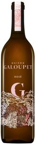

Trade Mark Journal No.2025/051 19 December 2025
WO0000001890258 (32,33,43)
Office of origin: France
Date of International Registration:3 October 2025
Date of designation in the UK:
3 October 2025

The mark contains the colours Yellow -712 C, pink - 189 C, pink - 705 C, pink - 7605 C and pink 196 C
International priority date claimed: 10 April 2025
(France)
(5137819)
- Class 32
- Beers; alcohol-free beverages; mineral and aerated waters; beverages based on fruit and fruit juices; non-alcoholic syrups; non-alcoholic fruit extracts and essences for making beverages.
- Class 33
- Alcoholic beverages (with the exception of beers); ciders; digestifs (liqueurs and spirits); wines with protected designation of origin; spirits [beverages]; alcoholic extracts or essences.
- Class 43
- Providing food and beverages and temporary accommodation services; services provided by bars, wine bars; catering services; advice and information with respect to cooking, gastronomy and oenology; sommelier services; wine-tasting services (provision of beverages).
CHATEAU DU GALOUPET
Representative: Monsieur BLANC FREDERIC Dennemeyer & Associates SAS, 23 RUE CLAPEYRON, F-75008 PARIS-8E-ARRONDISSEMENT, FRANCE